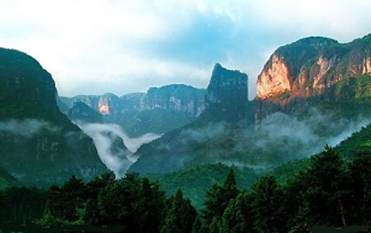

夏日旅游去哪里？ 盘点台州境内的避暑圣地

浙江在线07月13日讯烈日当头，去旅游=花银子+被暴晒？错！台州商报记者为您在台州境内找的这些景点既没有大太阳，也不需要花太多银子，有的甚至是免费的。它们有个共同特点就是，凉快！
-椒江：
[大陈岛]
大陈岛年均气温16.7℃，是典型的亚热带气候。岛上气候温暖湿润，冬暖夏凉，尤其盛夏时气温宜人，森林覆盖率达50%-60%，是避暑休闲的好去处。
●门票：无
●交通：椒江至大陈岛有“庆达号1号”交通船，每日往返，上午8点左右从椒江七号码头出发,下午3点左右返航，单程航行时间约2小时。遇旅游高峰每天2趟来回。岛上交通依靠6辆公交车营运。
-黄岩：
[富山大裂谷]
富山大裂谷旅游区海拔800余米，为6000万年前花岗斑岩山体崩塌形成的现代冰缘地貌、山崩地裂地质遗迹。景区内常年云雾缭绕，崇山峻岭、涧水长流，自然环境十分优美；古村落、古作坊、古民风韵味十足。
●门票：50元/人(儿童1.1米以下免票，1.1米-1.4米半票，16人以上门票有优惠)
●交通：
乘车路线：从黄岩西客站乘车至宁溪，再从宁溪车站乘车至富山，到富山后乘包车至景区。
自驾线路：甬台温高速至黄岩出口下，沿长潭方向行驶59公里至富山，根据指示牌至景区。
[黄岩大瀑布风景区]
黄岩大瀑布风景区素称“浙南第一瀑布群”，位于黄岩区上郑乡大溪村，融会了水、滩、林、田、古村和青山，构成了绝妙的大自然六重奏。“浙南第一瀑布群”，由五个高低不等、景观形态独特的瀑布组成，依次为：门槛瀑、彩虹瀑、卧龙瀑、羞女瀑、将军瀑。
●门票：50元/人(儿童1.1米以下免票，1.1米-1.4米半票，10人以上9折)
●交通：
乘车路线：黄岩西客站有到宁溪的班车，到宁溪后，还需再转车到景区。
自驾线路：甬台温高速至黄岩出口下，沿长潭方向行驶55公里至上郑，根据指示牌至景区。
[九峰公园]
九峰公园有“天然大氧吧”之称，因三面有九个山峰得名。公园内有“铁筛甘井”和“社筛古井”，泉水清澈甘甜。
●门票：无
●交通：201路公交车直达。
-仙居：
[神仙居]
融险峰、幽谷、秀林、奇瀑于一体，有将军岩、睡美人、飞天瀑等景点60多处。景区内有众多瀑布和深潭，如果恰逢雨过天晴，瀑布水量充沛，景色更加壮观。央视版《天龙八部》很多镜头就在这里取景，除欣赏避暑阴凉外，不妨也可追寻小龙女和杨过的足迹。
●门票：55元/人(1.1米-1.4米半票，1.1米以下免票)
●交通：
沿35省道往金华方向，到白塔镇，一路上都有景区标志指示牌，沿着指示牌再开8公里即到神仙居景区。
[景星岩]
景星岩距离仙居县城27公里，山势雄伟，峰峦叠嶂。夏天山顶凉风习习，空气清新，氧离子浓度也要比山下高出不少。特别是起雾后，景色更加优美。2008年由成龙、李连杰主演的好莱坞大片《功夫之王》便曾在景星岩取景。
●门票：48元/人(1.2米-1.5米半票，1.2米以下免票)
●交通：
从白塔镇沿35省道即可到达，一路标志清楚。通往景星岩是弯曲的盘山公路，转弯较多，要注意行车安全。
-三门：
[三门蛇蟠岛]
全岛面积17.4平方公里，为国内规模最大的海岛采石洞窟景区。度假区由海盗村、野人洞、红宝石洞窟宾馆、绿客老家洞窟度假村、千洞禅寺、三门湾海岛观光区、蛇蟠山洞窟探险区、玲珑山滨海游乐区以及狮子岭休闲度假区共同组成。洞中怪石嶙峋，冬暖夏凉，春秋两季微风习习，清爽宜人。
●门票：海盗村(50元)、野人洞(50元)，两个度假村门票80元
●交通：
自驾车路线：上同三高速到三门再至上敖码头，约2小时，再坐船十分钟左右即到蛇蟠岛。
乘车路线：到三门县汽车站坐三门至蛇蟠岛的直达车，约半个小时一班。
-临海：
[括苍山]
括苍山系浙东南第一高峰。云海、日出、风车被称为“括苍三绝”。括苍山依山濒海，气候得天独厚，特别是春夏季节，东南季风带来了大量的海上清新而湿润的空气，驱热祛暑，是夏季避暑和疗养的好地方。
●门票：无
●交通：
沿35省临海往仙居方向，在括苍小海门路口拐进(有指示牌)，经过镇区十字路口向西，300米后向南经括苍山门后为25公里的盘山公里。
[九台沟、三十六口缸、新树坑]
九台沟是括苍山脉中的一条山沟谷地，又是括苍山景色最精华之处。两岸石梁飞瀑，清凉宜人。
三十六口缸风光宜人、水质清澈，集峰、谷、涧、潭、瀑、泉、溪、花、草、石、木、古寨、古建筑和高大山体于一身，属浙江旅游圈中最高大、最幽深、最原始、最纯粹的生态森林风景区。
新树坑村位于括苍山路方溪之畔，两溪交汇，梯田层层，小桥流水人家，一派山村简朴清静气息。同时，附近还有一个方溪天然浴场，游客不妨潜入水中体验夏日清凉，不过，得自备泳衣泳圈。
●门票：无
●交通：
沿35省临海往仙居方向，在括苍小海门路口拐进(有指示牌)，经过镇区十字路口一直向南，8公里后车口溪分岔路口，往东8公里为三十六口缸景区(黄家)，往西8公里为新树坑、九台沟景区。
-温岭：
[温岭长屿硐天]
风景区总面积为16.18平方公里，由八侧岩、双门硐、崇国寺和野山四大景区组成，其中八仙岩、双门硐以硐群景观为主。长屿硐群是自南北朝以来人工开采石板后留下来的景观，迄今已有1500多年的历史。
●门票：八仙岩(10元)、观夕硐(40元)、水云硐(40元)、凌霄硐(30元)、双门硐(15元)、双门石窟(20元)
●交通：
自驾车路线：可沿甬台温高速，过大溪至松门一级公路，往长屿方向开便可到达。
乘车路线：从温岭市老车站乘往新河、箬横的中巴在长屿镇下车即可。
[温岭渔家之旅]
石塘是温岭的一个古镇。小镇依山临港，到处是石街、石屋。这里的村民几乎都以捕鱼为生，因此古镇上总是散发着一股新鲜、诱人的滋味。在这里你可以吃渔家菜、住渔家屋、享渔家乐，也能干渔家活，做一天渔民，体验传统淳朴的海上生活……活蹦乱跳的鱼、虾、蟹，打上来的就是你的，绝对新鲜、美味。
●门票：包船出海捕鱼一次1280元，可坐11-15个人，撒一网，约2个小时
●交通：
自驾车路线：甬台温高速公路温岭(大溪)出口下高速，沿大溪至松门一级公路至石塘镇。
乘车路线：从温岭市老车站乘石塘的中巴便可到达。
-天台：
[天台山龙穿峡]
龙穿峡风景区位于国家级重点风景名胜区、天台山的十三大景区之一桐坑溪――万年寺景区境内。景区融山水、峡谷、飞瀑、洞泉、名木、花草、鸟兽为一体，以峰险、壁绝、洞奇、雾幻为主打特色，是江浙一带不可多得的自然山水画廊，它以八瀑一湖自然景观为构架，道教文化为精髓，霞客文化为指引，吸引着不少海内外的游客前来。
●门票：门票60元，团体(30个以上)48元，目前购买套票有优惠，原价120元，现在只需88元，包括景区门票和滑道、滑索两个项目票
●交通:
自驾车路线：下高速后，在白鹤殿出口沿指示标开7公里，约20分钟，便可达到。
乘车路线：可先到白鹤镇，改换出租车等交通工具。
-玉环：
[玉环大鹿岛度假村]
大鹿岛位于玉环县东南屿披山洋海面上，由大鹿、小鹿两岛组成。其中龙游洞、索桥风月、八仙过海、五百罗汉、寿星岩、渔翁老洞、乱石穿空、千佛龛为岛上八大景观。岛屿四周海天辽阔，岩礁上生长着众多的海螺、藤壶、牡蛎、观音手等海生贝类，可供观光者拾取，烹煮品尝，别具情趣。全岛森林覆盖率达87.6%，冬暖夏凉，气候宜人，在这里可尽情地享受日光浴、森林浴、海水浴，还可以熏海风、听涛声、闻鸟语、观日出、尝海鲜。
●门票：站台码头门票16元，应多码头门票26元
●交通:
自驾车路线：上甬台温高速在温岭大溪出口下，沿县乡道东行，再南转S76开到坎门码头，坐船上岛。据《台州商报》朱丹君 杜媛 张超整理 李昌正 /图